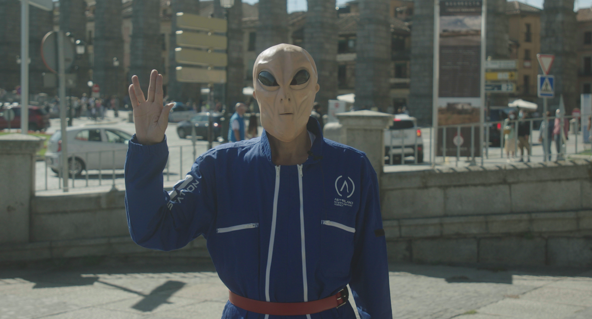
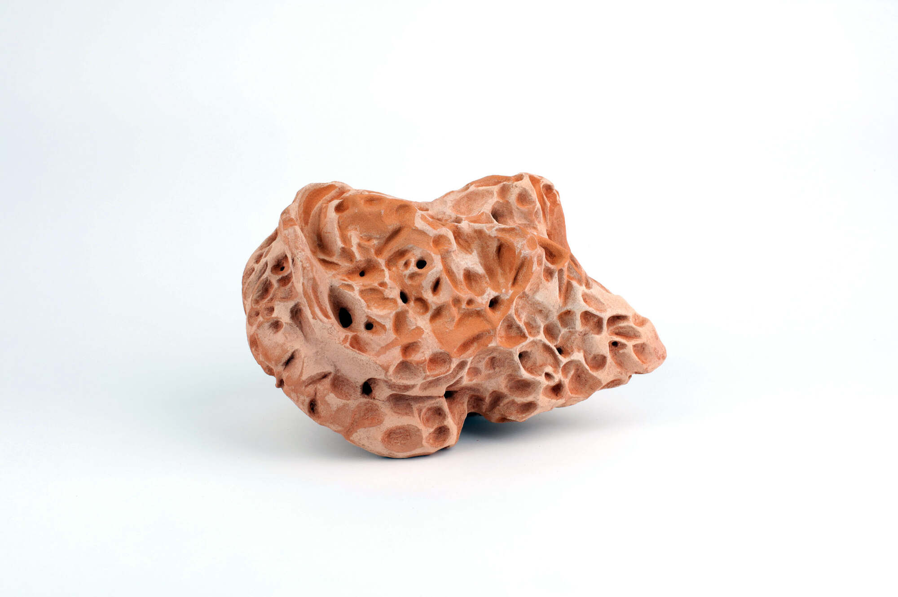

Eternity One
2021 — presentEternity One follows the residents of Tangier Island in the Chesapeake Bay over four years as rising sea levels erode both their land and their way of life. Running parallel to this documentary record is a transhumanist conference in Spain, where futurists pursue technological immortality and ideas of post-human transcendence. A game-engine-generated meteor serves as non-human narrator, speaking from a temporal scale far beyond human lifetimes. The friction between these two visions of the future forms the film's central question: what does the future look like from where you are standing?




The Eternity One Archive is a generative web companion to the documentary, structured through associative logic rather than chronology. Oral histories, photographs, objects, and documents are mapped as nodes in a living network. The archive is a parallel form of the film — not a record of what happened, but a field in which it can be re-encountered.